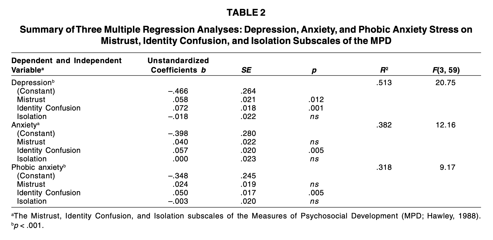
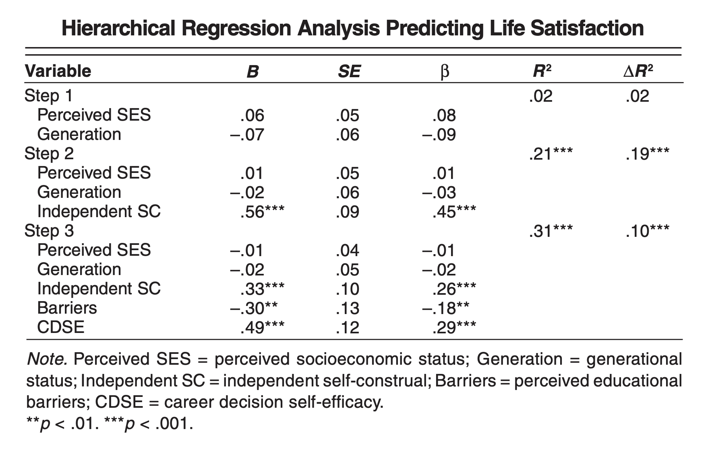
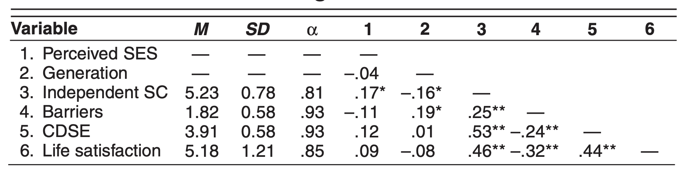
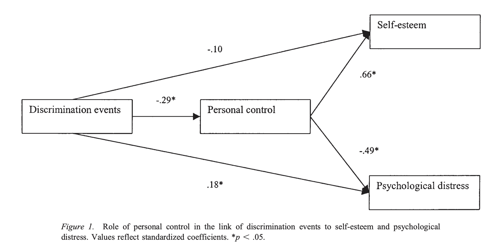
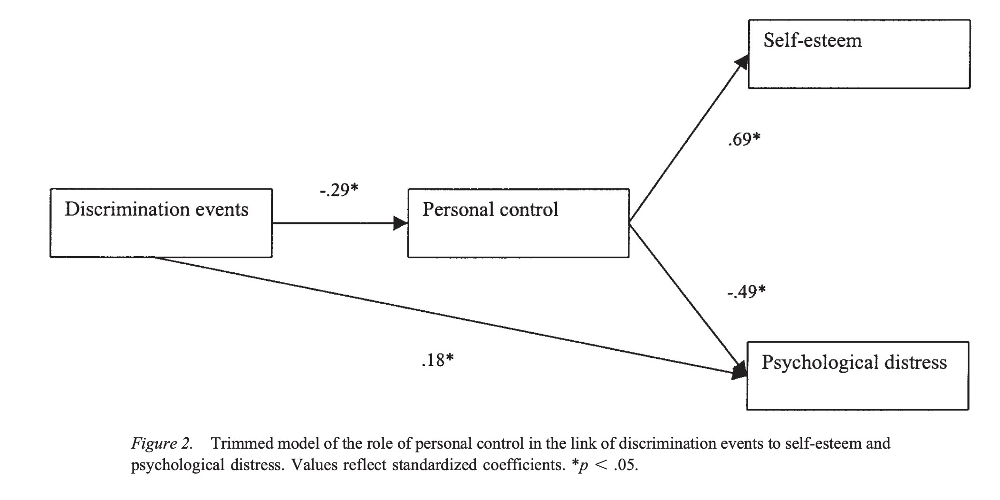
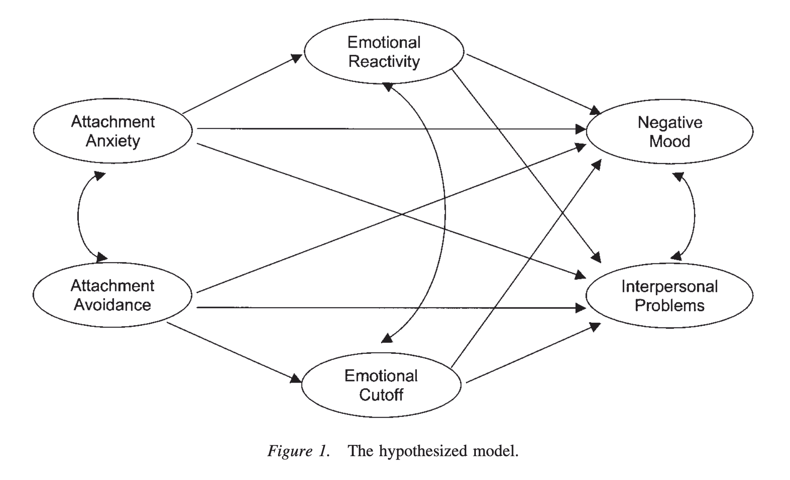
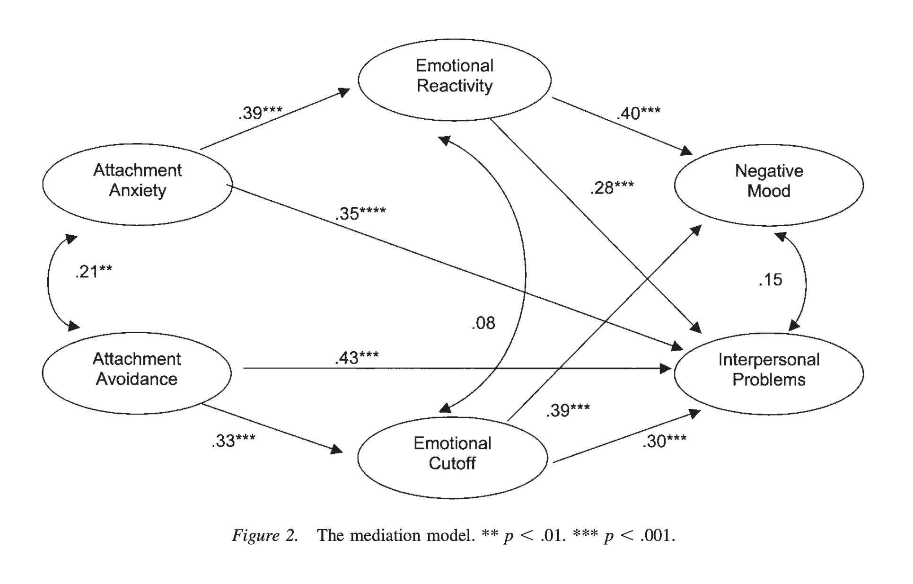
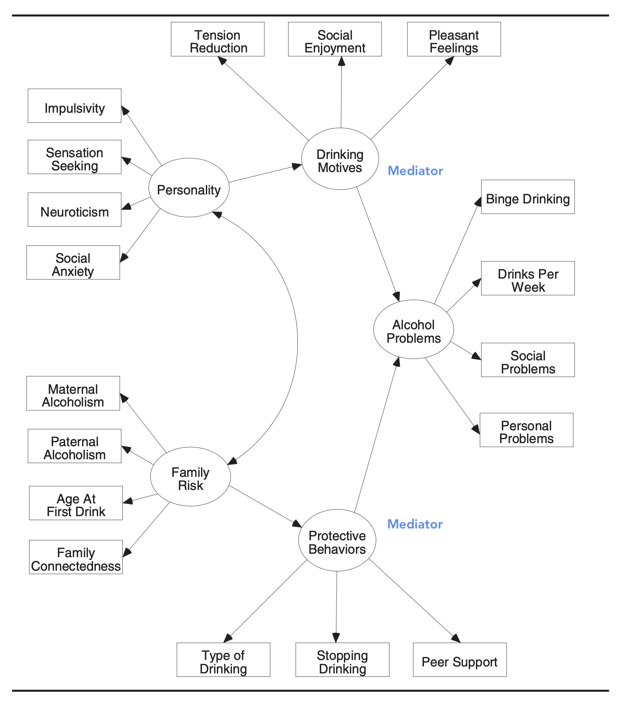

Papers
Asner-Self & Marotta (2005)의 연구
Asner‐Self, K. K., & Marotta, S. A. (2005). Developmental indices among Central American immigrants exposed to war‐related trauma: Clinical implications for counselors. Journal of Counseling & Development, 83(2), 162-171.
- 전쟁 관련 외상에 노출되었던 68명의 중앙아메리카 이민자들을 대상
- 심리적 스트레스(우울, 불안, 외상성 스트레스)(DV)에 대한 예측변수들(IV)을 검증: 1) 불신, 2) 정체성 혼란, 3) 고립
- 세 하위 척도 각각이 다른 두 하위척도와는 독립적인(independent)/고유한(unique) 심리적 스트레스에 주는 영향을 파악할 수 있음.

Pina-Watson, Jimenez & Ojeda (2014)의 연구
Piña‐Watson, B., Jimenez, N., & Ojeda, L. (2014). Self‐construal, career decision self‐efficacy, and perceived barriers predict Mexican American women’s life satisfaction. The Career Development Quarterly, 62(3), 210-223.
- 멕시코계 미국인 여대생을 대상으로
- 1) 진로결정 자기효능감, 2) 지각된 교육 관련 장벽, 3) 독립적 자기-구인(independent self-construal)(IVs)이 삶의 만족(DV)을 얼마나 예측하는가를 검증
- 이 때, 사회경제적 지위(SES)와 세대 지위(genertional status)가 설명하는 것 이상으로 DV를 설명하는지 검증
- Generational status: 1st: immigrants, 2nd: (U.S. born, parents were immigrants), 3th (parents were U.S. born), 4th: (grandparents were U.S. born), 5th: (great grandparents were U.S. born)


Moradi와 Hasan (2004)의 연구: Path Analysis(경로 분석)
- 아랍계 미국인을 대상으로 차별의 경험이 자아존중감/심리적 스트레스을 어떻게 변화시키는지를 검증
- 개인 통제 (personal contol)가 상실됨에 따른 결과라고 추론
 
Wei, Vogel, Ku,와 Zakalik (2005)의 연구: SEM
애착을 척도 Experiences in Close Relationships Scale (ECRS; Brennan et al., 1998)로 측정 후 2개의 요인으로 나누어 불안/회피 척도로 활용
- 불안 하위 척도(18개 항목): 거절에 대한 두려움과 버려짐에 대한 강박관념을 측정; “나는 버려질까 봐 걱정된다.”
- 회피 하위 척도(18개 항목): 친밀감에 대한 두려움과 타인과 가까워지는 것에 대한 불편함 또는 의존성을 평가; “나는 파트너가 나에게 너무 가까이 다가오면 긴장한다.”
Differentiation of Self Inventory(DSI; Skowron & Friedlander, 1998)에서 두 하위 척도 사용
- 감정 반응성 하위 척도(11개 항목): 환경 자극에 감정이 넘치거나, 감정이 불안정하거나, 과민하게 반응하여 감정에 휩쓸릴 정도로 반응하는 정도를 반영; “때때로 나는 마치 감정의 롤러코스터를 타는 것처럼 느낀다.”
- 정서적 단절 하위 척도(12개 항목): 내면의 감정 경험이나 대인관계가 너무 강렬할 때 친밀감에 위협을 느끼고 타인과 자신의 감정으로부터 자신을 고립시키는 것을 반영; “나는 가족 중 누구에게도 정서적 지원을 요청하는 것을 고려하지 않는다.” (번역 by DeepL)


SEM (구조방정식 모형)
Path analysis + Confirmatory factor analysis (CFA)
변수들 간의 인과 관계에 대한 가설 모형

Martens, M. P. (2005). The use of structural equation modeling in counseling psychology research. The Counseling Psychologist, 33(3), 269–298.